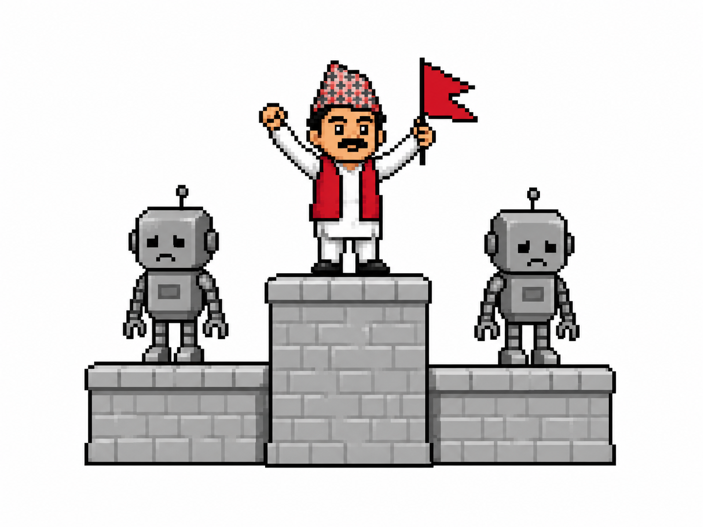

| system | WER ↓ | |
|---|---|---|
| nepaliconformer offline (ours, 121M) | 33.8 | |
| Kriti — Naamche Labs (119M) | 40.6 | |
| nepaliconformer streaming (ours, 520 ms) | 59.9 | |
| MMS-1B — Meta, zero-shot (965M) | 81.0 | |
| IndicWav2Vec — community mirror (94M) | 86.6 | |
| Whisper-large-v3 — zero-shot, tuned (809M) | 99.4 |
